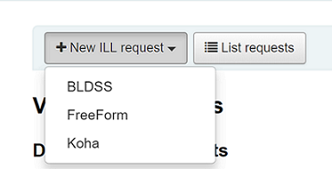
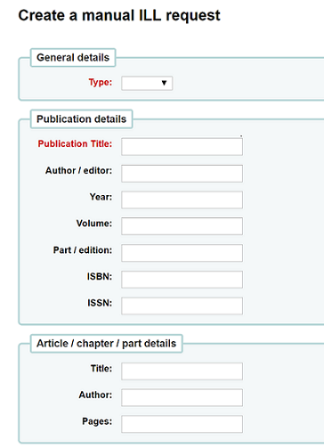
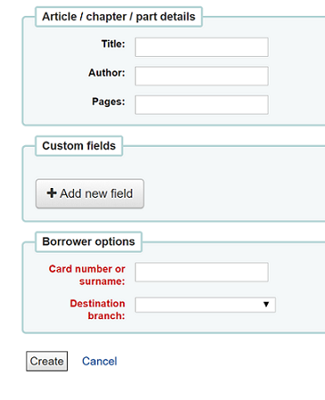
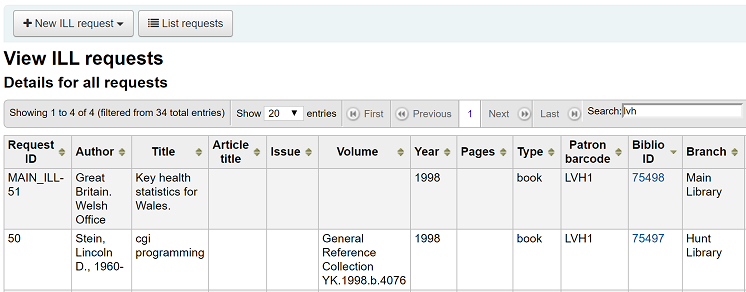
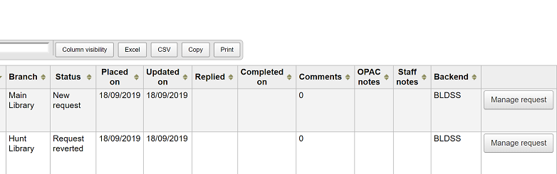

ILL requests / Interlibrary loans
The ILL (Interlibrary loans) requests module adds the ability to request and manage loans or copies of material from external sources. Patrons can submit a request via the OPAC from the your interlibrary loan requests tab of their account. Library staff can then review and process those requests. Alternatively staff can place requests themselves from the staff client.
Set up
Before using the ILL requests module you will want to make sure that you have completed all of the set up.
The ILL requests module can be configured for different types of requests and workflows known as backends. Currently available backends are documented on the Koha community wiki at https://wiki.koha-community.org/wiki/ILL_backends. You will need to configure at least one backend.
Next, set your system preferences for interlibrary loans.
Library staff responsible for ILL requests need the following permission set on their account: ill: Create and modify Interlibrary loan requests.
The ILL requests module uses system defined statuses. You can add custom statuses to match your ILL workflow as ILLSTATUS authorized values.
ILL email notifications
Email notifications can be sent to ILL staff when a patron makes a request to modify or cancel an existing request. The notice templates are ILL_REQUEST_CANCEL and ILL_REQUEST_MODIFIED. The ILL staff email address can be configured per library. If this is not set the ILLDefaultStaffEmail system preference will be used.
Notifications can also be sent to patrons for requests that are either available for pick-up or are unavailable and have been canceled. The notice templates are ILL_PICKUP_READY and ILL_REQUEST_UNAVAIL. The notifications are enabled from the patron categories default patron messaging preferences. You can customize the notice text for these notices in Notices & slips in the Tools module.
Create ILL requests
Get there: More > ILL requests

Choose ‘New ILL request’ and then Freeform.
注解
The images shown here are for the FreeFrom backend only.

Enter a Type: Book, Article, Journal, Other.
In the next two sections enter as much as information as you can including chapter/article/part if applicable.

Add custom fields, for example if you wished to add a note.
Under the borrower options enter the library branch you would like the request to be sent to.
Click on ‘Create’ and you will be shown a Request details summary page.
注解
If you have enabled the ILLCheckAvailability system preference and installed plugins for the staff interface you will be presented with search results. The user can click on a link to a relevant resource if found or proceed with the ILL request. If no results are found the ILL is completed in the usual way.
You can now process your request as explained in Managing ILL requests section or return to the list of ILL requests.
Viewing ILL requests
From the main ILL requests screen you can view, filter and sort your ILL requests. You can use the ILLHiddenRequestStatuses preference to hide completed statuses by default. You can also click on the ‘List requests’ button at any time to return to this list.

There is a large amount of data available in the Requests table so it is advisable to make use of Table settings section of the Administration module (table id: ill-requests) to view only the information you need. The first half of the table displays data related to the ILL item itself such as title, volume, page numbers.

The second half of the table displays data related to the request such as notes and comments.
Managing ILL requests
Click on the ‘Manage request’ button in the final column. Depending on the current status of the request you may see some or all of the following options:
Edit request
you can edit the borrowernumber, biblionumber, branch and can add notes. If you have added custom ILL statuses you can also edit these.
Confirm request
place the request with a document supply service using a backend such as BLDSS.
Place request with partners
place the request via email with a partner library
Switch provider
this allows you to move the request to a different provider (backend).
Delete
fully delete the request. Details of deleted requests are not retained in Koha.
Revert request
following a status of ‘Requested’ or ‘Requested from partners’ library staff can cancel the request from the external source. The status reverts to ‘New’
Mark completed
used when the ILL request has been fulfilled.
Edit item metadata
Dependent on the backend used for the request you may be able to edit, add or delete some or all of the request metadata. For example, if the metadata has originated from a requester using the FreeForm backend this may need to be edited, whereas metadata from an external recognized source such as BLDSS should not.
Display supplier metadata
Displays any extra metadata that might have been provided by your ILL supplier that has not been included in the standard request fields.
ILL request log
Displays a history of changes made to the request.
Comments
It is possible to add comments to an ILL request and these can be used by ILL staff to keep track of work undertaken. Comments are read only and are stored in chronological order. They display the borrower details and date of the comment. If present, the number of comments is displayed in the List requests view.
Checkout
This option is only available if you have the CirculateILL preference enabled. See the Circulating ILL materials section.
Request statuses
The full list of installed ILL statuses are:
New request
Requested
Requested from partners
Request reverted
Cancellation requested – a patron has requested cancellation from the OPAC.
Completed
Checked out
Returned to Library
Place request with partners
If you have a network of partner libraries which permit ILL requests you can manage this through Koha. First you need to create your partner library accounts:
You will need to set up a patron category with the code ILLLIBS.
You will need to create a patron account with this category for each partner library.
Each library must have an email address as this will be the mechanism for sending the inter-library loan request. The notice template is ILL_PARTNER_REQ and the text can be customized from Notices & slips in the Tools module.
You can now use the ‘Place request with partners’ option when processing requests.
注解
If you have enabled the ILLCheckAvailability preference enabled you can use plugins to search the catalogs of your partner libraries using Z39.50 prior to confirming the request with a partner.
Circulating ILL materials
If you have enabled the CirculateILL preference you can checkout ILL items directly from the ILL request.
When you create a Book type request a brief catalog record is created automatically based on the Fast Add MARC framework. Once a request has a suitable status, a Checkout button is displayed on the Manage request toolbar. Clicking this will enable the user to check out the item either to the user who made the request or an in-house statistical patron.
To checkout an item:
Click on the Checkout button.
Select an item type when prompted. An item is created automatically which is attached to the biblio record that was created for the request. The barcode of the item is in the format ILL-requestid.
Next, at the patron checkout screen select a due date. If you do not select a due date the relevant circulation rule will be used to calculate the due date.
Once the item is checked out the status of the request is changed to ‘Checked out’ and after it has been checked in the status updates to ‘Returned to library’.
Bibliographic records created as part of an ILL request will have an extra tab in the holdings table for that allows you to link back to the request in the ILL module.